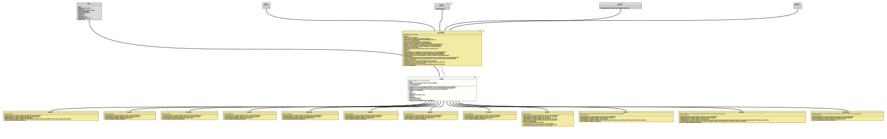

Class ValueBase<D extends Dimension,I extends DimensionedValue<D>>
java.lang.Object
org.tquadrat.foundation.value.api.ValueBase<D,I>
- Type Parameters:
D- The dimension.I- The implementing type.
- All Implemented Interfaces:
Serializable,Cloneable,Comparable<DimensionedValue<D>>,Formattable,DimensionedValue<D>
- Direct Known Subclasses:
AreaValue,DataSizeValue,LengthValue,MassValue,PressureValue,SpeedValue,TemperatureValue,TimeValue,VolumeValue
@ClassVersion(sourceVersion="$Id: ValueBase.java 995 2022-01-23 01:09:35Z tquadrat $")
@API(status=STABLE,
since="0.0.4")
public abstract class ValueBase<D extends Dimension,I extends DimensionedValue<D>>
extends Object
implements DimensionedValue<D>
An abstract base implementation for the interface
DimensionedValue
that is intended as the base for concrete implementations of value types.- Author:
- Thomas Thrien (thomas.thrien@tquadrat.org)
- Version:
- $Id: ValueBase.java 995 2022-01-23 01:09:35Z tquadrat $
- Since:
- 0.0.4
- See Also:
- UML Diagram
-

UML Diagram for "org.tquadrat.foundation.value.api.ValueBase"
{kind=link}
-
Field Summary
FieldsModifier and TypeFieldDescriptionprivate DThe unit for the value.private final BigDecimalThe numerical value for this instance.private static final longThe serial version UID for objects of this class: -2075489505691464486L.Fields inherited from interface org.tquadrat.foundation.value.api.DimensionedValue
MATH_CONTEXT -
Constructor Summary
Constructors -
Method Summary
Modifier and TypeMethodDescriptionfinal BigDecimalReturns the base value (this value, converted to the base unit).clone()Creates a new copy of this value.final Icopy()Creates a new copy of this value.final ICreates a new copy of this value.final booleanfinal DgetUnit()Returns the unit for the value.final inthashCode()final voidApplies another unit for the value.final StringtoString()Returns the String representation for this value
-
Field Details
-
m_Unit
The unit for the value. -
m_Value
The numerical value for this instance. -
serialVersionUID
The serial version UID for objects of this class: -2075489505691464486L.- See Also:
-
-
Constructor Details
-
ValueBase
Creates a newValueBaseinstance.- Parameters:
unit- The unit.value- The value; only absolute (positive) values are allowed, a sign will be stripped.
-
ValueBase
Creates a newValueBaseinstance.- Parameters:
unit- The unit.value- The value; it must be possible to parse the given String into aBigDecimal.- Throws:
NumberFormatException- The provided value cannot be converted into aBigDecimal.
-
ValueBase
Creates a newValueBaseinstance.- Type Parameters:
N- The type ofvalue.- Parameters:
unit- The unit.value- The value.
-
-
Method Details
-
baseValue
Returns the base value (this value, converted to the base unit).
According to the result, this is the same as calling
.convert( baseUnit() );- Specified by:
baseValuein interfaceDimensionedValue<D extends Dimension>- Returns:
- The numerical value as for the base unit.
- See Also:
-
clone
Creates a new copy of this value. -
copy
Creates a new copy of this value.- Specified by:
copyin interfaceDimensionedValue<D extends Dimension>- Returns:
- The copy.
- See Also:
-
copy
Creates a new copy of this value.- Specified by:
copyin interfaceDimensionedValue<D extends Dimension>- Parameters:
unit- The unit for the new copy.- Returns:
- The copy.
- See Also:
-
equals
Two instances of a class implementing this interface are equals if they are of the same class and if their values, converted to the base dimension, are equals.
-
getUnit
Returns the unit for the value.- Specified by:
getUnitin interfaceDimensionedValue<D extends Dimension>- Returns:
- The unit.
-
hashCode
The hash code is based on the base value and base unit only.
-
setUnit
Applies another unit for the value. This does not affect the results ofDimensionedValue.equals(Object),DimensionedValue.hashCode()} andDimensionedValue.compareTo(DimensionedValue), nor that ofDimensionedValue.baseValue().- Specified by:
setUnitin interfaceDimensionedValue<D extends Dimension>- Parameters:
dimension- The new unit.
-
toString
Returns the String representation for this value; usually, this is in the format
<numerical value> <unit symbol>like "
4.5 m".The precision for the mantissa is provided by the unit.
If more control over the output format is required, see
DimensionedValue.toString(int, int).
-